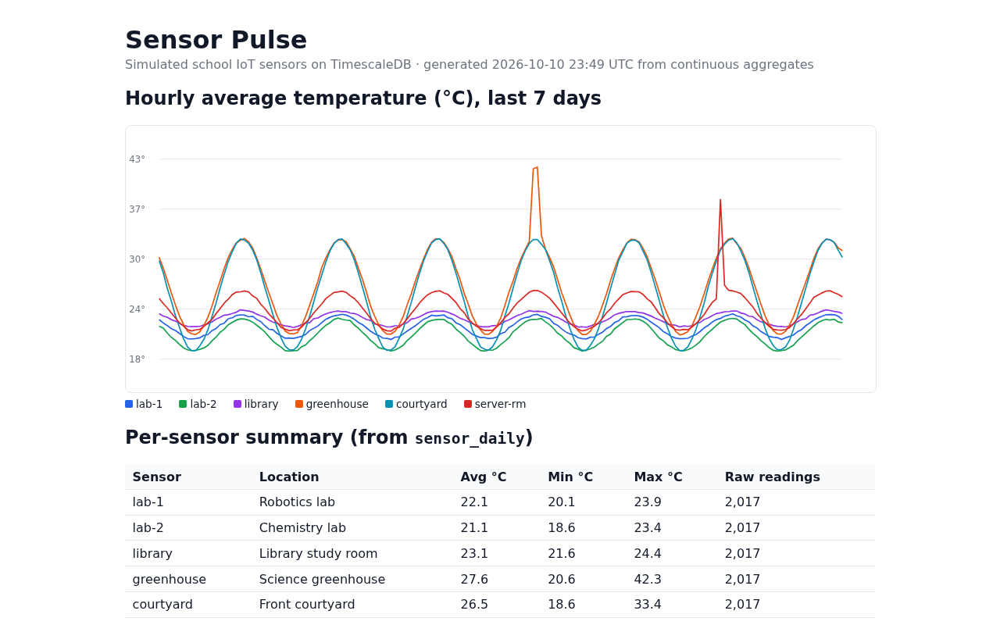

Sensor Pulse
six simulated school sensors stream into a TimescaleDB hypertable on Tiger Cloud, continuous aggregates roll them up hourly and daily, and an anomaly query catches the two incidents hidden in the data.

MLH GHW Tiger Data challenges
| GHW challenge | Where it lives |
|---|---|
| Set up a Tiger Cloud service and create your first Hypertable | sql/01_schema.sql |
| Simulate an IoT sensor dataset with Tiger Cloud | sql/02_simulate.sql |
| Accelerate Dashboards with Continuous Aggregates | sql/03_continuous_aggregates.sql, dashboard.py |
| Ingest real-time financial data into Tiger Cloud (Part 4) | finance/schema.sql, finance/ingest.py |
Parts 2–4: vector search, MCP and live crypto prices
Later parts run on the same Tiger Cloud service. Each one has real output checked into the repository; details and limits are in the README.
| Part | What it does | Where it lives |
|---|---|---|
| Part 2: vector search with pgvector + pgvectorscale | A maintenance_notes hypertable with a VECTOR(384) column and a StreamingDiskANN index holds 30 synthetic staff notes (Oct 4–10, 2026), embedded locally with fastembed (BAAI/bge-small-en-v1.5, no API key). Similarity search is combined with a time filter, a sensor-type filter and a join to the sensor_hourly continuous aggregate. Example: “the air conditioning broke and the room overheated” returns the two server-closet AC notes from Oct 9 first. Limit: 30 rows is far too few to show DiskANN’s speed; the run shows the index being used, not a benchmark. |
vector/ (sample output) |
| Part 3: Tiger CLI + MCP with an AI agent | The Tiger CLI (v0.26.0) was authenticated with tiger auth login --headless. mcp/mcp_client.py launches tiger mcp start over stdio and lets an AI agent (Hark) list the 19 Tiger MCP tools and call service_list and db_query against the live service. Limit: it is a one-shot client that calls the tools you pass, not a chat loop, and the transcript is one short session. |
mcp/ (transcript) |
| Part 4: real-time financial data | BTC, ETH and SOL prices from the CoinGecko Keyless Public API (no key, no sign-up) land in the crypto_ticks hypertable, polled in one request every 20 s with backoff on HTTP 429 (rate limit) and HTTP 403 (bot block), when the last good prices are shown with a “live prices unavailable” note and never re-inserted, and duplicate updates skipped. The crypto_ohlc_1m real-time continuous aggregate rolls them into 1-minute open/high/low/close candles with a refresh policy that runs every minute. Limit: the keyless price changed about once every 1 to 2 minutes, so it is near-real-time, not tick-by-tick, and the live run was short. |
finance/ (details and limits) |
Crypto price data provided by CoinGecko: Powered by CoinGecko. All other data in this repository is simulated.
Links
Run it
git clone https://github.com/draarivpatel-ui/tiger-sense-pulse.git
cd tiger-sense-pulse
bash test.shBuilt with AI assistance
An AI assistant (Hark) wrote the SQL, Python and README for Aariv Patel's GHW Hacktoberfest entry. The GitHub Copilot coding agent wrote this page (#2), and Hark later added the Parts 2–4 summary from the README. All sensor data is simulated; the crypto prices in Part 4 are live data from CoinGecko (Powered by CoinGecko).